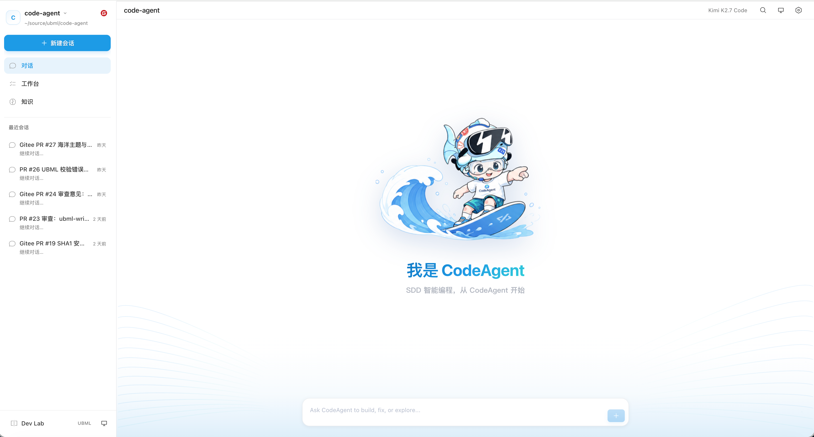
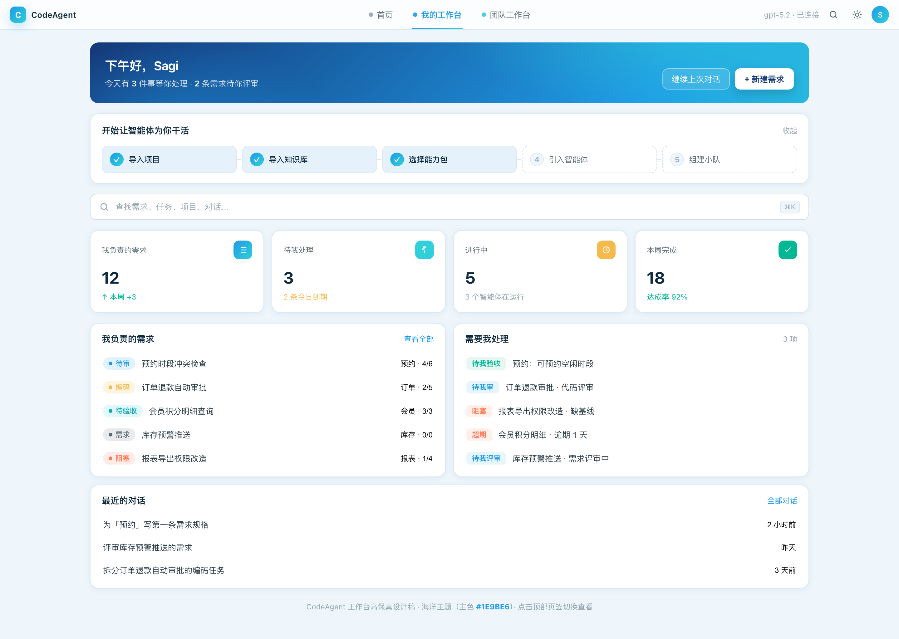
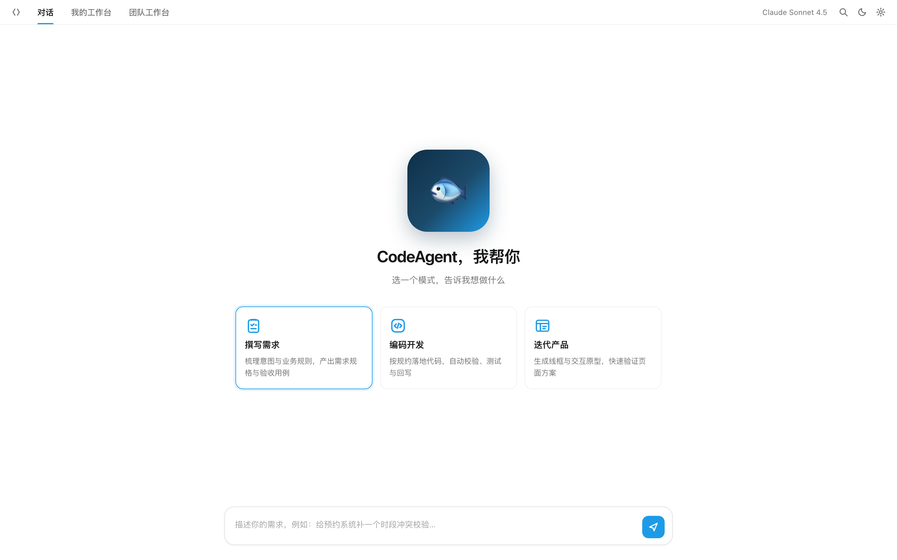
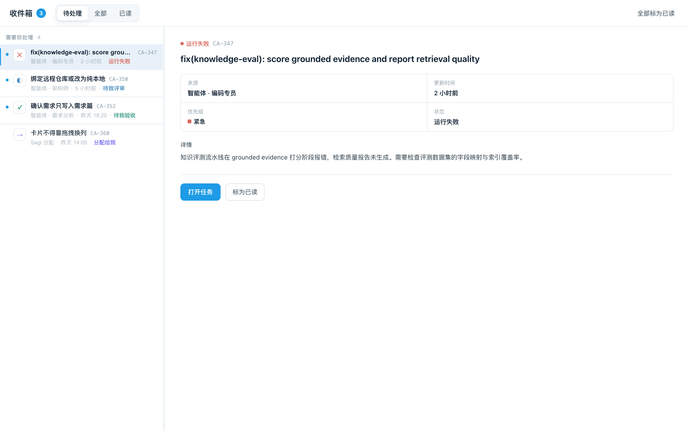
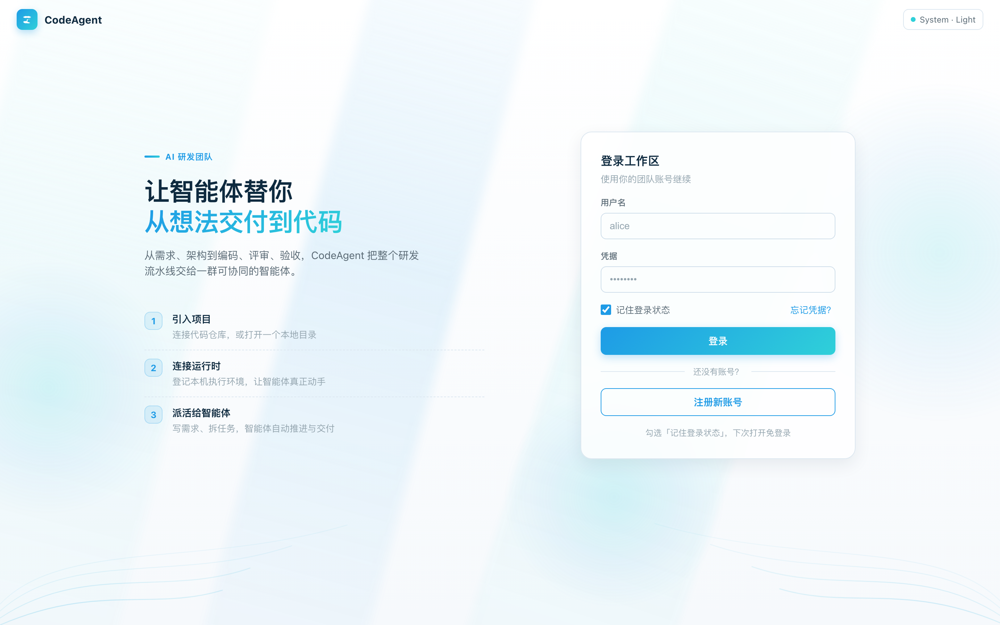

CASE 01 / OPEN SOURCE
CodeAgent
Workbench System
A design system and agent-ready workbench for turning natural-language intent into validated application artifacts.

THE PROBLEM
AI-generated interfaces drift when the system is only visual.
The workbench needed a coherent product shell for conversations, missions, knowledge, previews, and validation. More importantly, agents needed machine-readable constraints — not screenshots — to generate usable UI.
MY ROLE
I connected the design language to the generation pipeline.
I authored the Ocean visual style guide and --ca-* token layer, prototyped the core flows, and helped expose schemas, templates, examples, and validation rules through MCP.
KEY DESIGN DECISIONS
Make the system semantic, not page-specific.
Tokens such as primary, surface, selected, and text roles let the same components survive theme changes — and give agents stable names to reason about.
Give agents constrained building blocks.
MCP retrieves schemas, templates, examples, APIs, and validation rules on demand. Generation becomes selection and composition, not unconstrained styling.
Prototype the shell before scaling features.
Home, inbox, and login prototypes tested hierarchy and navigation before implementation expanded into missions, knowledge, preview, and verify surfaces.
One source of visual truth
Semantic CSS tokens map the workbench to a bright ocean theme and a deep-sea dark mode without hard-coded component colors.
#1E9BE6#2FD0D9#15397A#EEF6FCPROTOTYPES BEFORE IMPLEMENTATION
Core flows were tested as interactive HTML before any production code.



